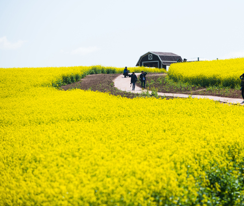
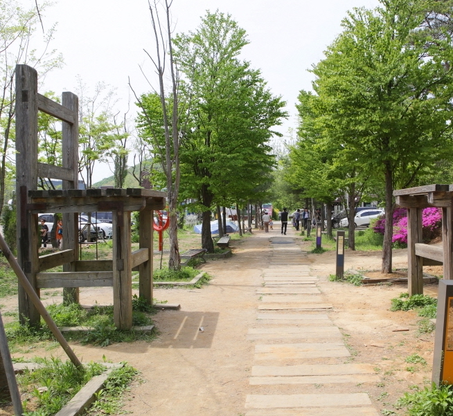
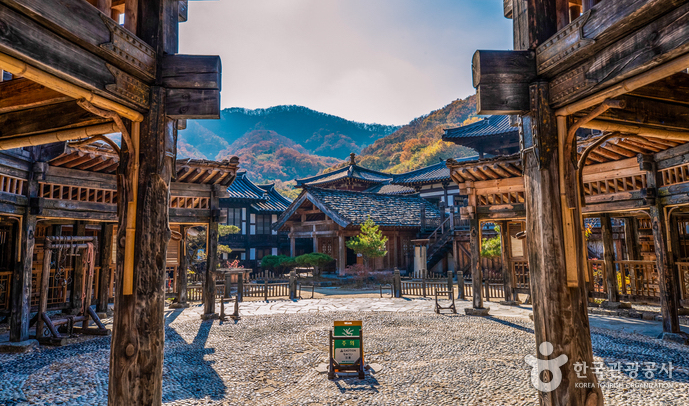
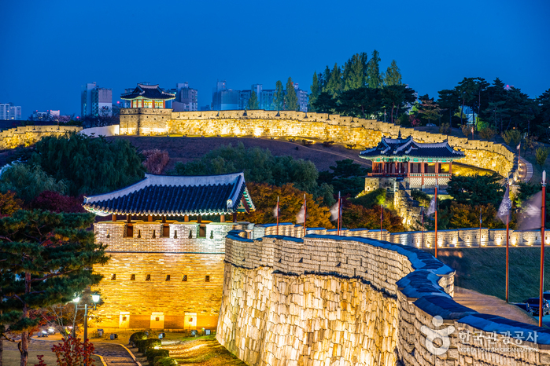

주요 관광지
-

안성팜랜드(안성)
안성팜랜드는 동물들을 직접 만지고 먹이를 주며 즐거운 체험을 할 수 있는 곳으로, 다양한 가축들과 함께 즐거운 체험프로그램을 진행하고 있다. 다양한 놀이시설과 우리나라 농축산업의 소중함을 몸과 마음으로 느낄 수 있는 교육시설 등 가족단위 관광객들에게 많은 인기를 받고 있는 곳이다.
입장료 | 대인 14,000원 소인 12,000원 -

혜이리 예술마을(파주)
헤이리는 문화예술의 생산, 전시, 판매, 거주가 함께하는 통합적 개념의 특수한 공동체 마을이다. 수많은 갤러리, 박물관, 전시관, 공연장, 소극장, 카페, 레스토랑, 서점, 게스트하우스, 아트숍과 예술인들의 창작공간이 자리 잡고 있다.
-

허브 아일랜드(포천)
허브의 원산지인 지중해를 테마로 이색적이며 다양한 볼거리와 즐길거리가 있고, 세계 최초의 허브식물박물관이 있다. 매년 계절별로 불빛동화축제를 비롯하여 라벤더축제, 향기샤워축제, 생생수확축제 등이 개최되고 있으며 부지 전체가 지중해풍의 건물과 작은 정원들로 꾸며져 있어 많은 사람들이 찾고 있다.
-

용인 대장금파크(용인)
우리나라 최대 규모의 오픈 세트장으로, 삼국시대에서 조선시대까지 시대별 거리와 집들이 재현되어있다. 사극 뿐 아니라 현대극, 영화, CF 촬영이 활발히 이루어지고 있으며 <주몽>, <이산>, <동이>, <역적>, <군주> 등 다수의 MBC 사극을 촬영 한 곳이기도 하다.
입장료 | 성인 9,500원 중고등생 8,000원 초등학생 7,000원 (48개월 미만 무료) -

수원화성(수원)
조선 태종때 도호부로 승격된 수원은 한성 4진의 하나였다. 한양을 중심으로 동서남북 방향인 광주, 강화, 수원, 개성에 진을 설치하여 수도 한양을 보위케 한것이다. 그 수원땅을 지키고 있는 화성은 유네스코에 의해 세계문화유산으로 등재되면서 역사적 가치를 높이고 있다.
맛집 및 카페
-

고가리 막국수(용인)
한식
주소 | 경기 용인시 수지구 이종무로 157 -
목항원(남양주)
한식
주소 | 경기 남양주시 덕릉로1071번길 34-11 -

카페 대너리스(남양주)
카페/베이커리
주소 | 경기 남양주시 조안면 북한강로 914